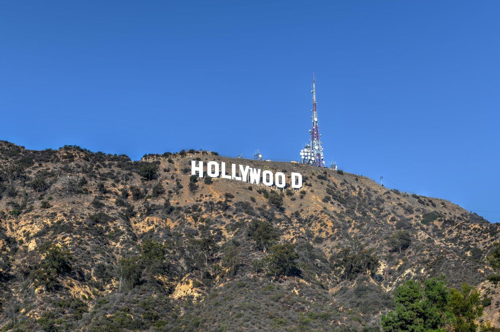
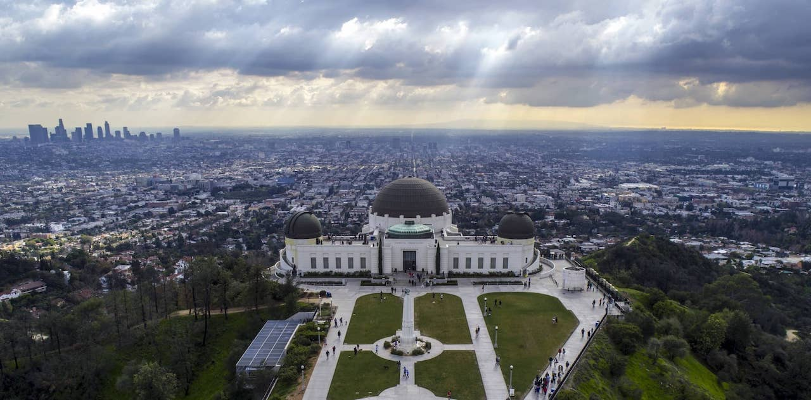
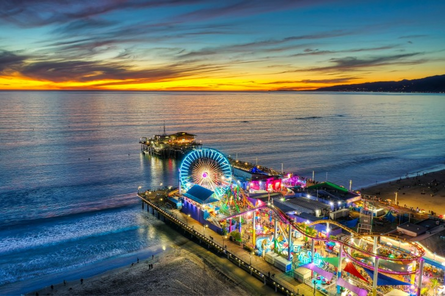

Las autoridades del condado de San Bernardino, en California, Estados Unidos, han informado este miércoles del hallazgo de seis cuerpos abatidos a tiros en una zona desértica situada a 80 kilómetros de Los Ángeles.
La investigación continúa por el momento abierta a las afueras de la comunidad de El Mirage, nombre del área rural donde los agentes hallaron este martes los cadáveres. Los agentes acudieron a la "remota zona" tras responder a una llamada de emergencias por posible homicidio, ha detallado Mara Rodríguez, portavoz de la oficina del sheriff en este condado.
Buscar la estrella de tu actor o artista favorito en el suelo del Paseo de la Fama de Hollywood o Walk of Fame es una de las mejores cosas que hacer en Los Ángeles. Uno de los lugares más populares de este paseo se encuentra delante del Teatro Chino Grauman, donde podrás encajar tus manos o pies en las huellas de muchas de las grandes estrellas de Hollywood y sentirte uno de ellos por unos instantes.
Santa Mónica es una de nuestras zonas favoritas y otro de los lugares que visitar en Los Ángeles más imprescindibles. Este barrio destaca por su gran paseo marítimo frente al océano Pacífico, sus playas y su ambiente deportivo y multicultural. Además, situado junto al muelle de Santa Mónica, se encuentra uno de los parques de atracciones que ha salido en más películas, el antiguo Pacific Park.
Subir al atardecer al Observatorio Griffith, situado en lo alto de una colina de la zona sur de Hollywood, para ver la puesta de sol y la ciudad iluminada de noche es otra de las mejores cosas que hacer en Los Ángeles. Además de las mejores vistas de Los Ángeles, este observatorio tiene al lado un gran parque perfecto para pasear, hacer rutas de senderismo y sobre todo, desconectar del ajetreo y tráfico de la ciudad.